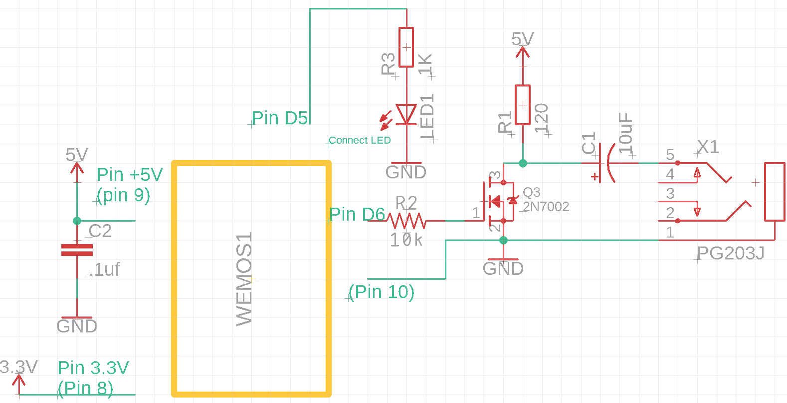
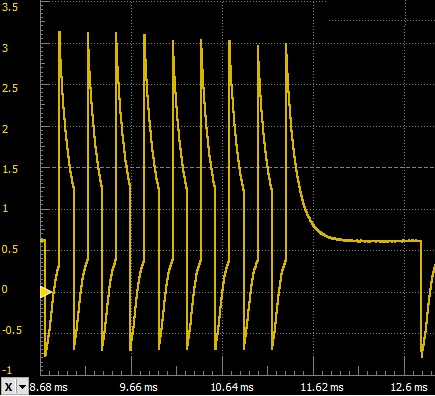

ZX80 Computer revisited and adding program loading capability with an ESP8266 (ZXBrowser)
Getting the ZX80 working
I had a very basic ZX80 computer in one of my storage boxes from long ago and decided I would see if it worked. After a couple minor fixes that were needed it came right up, which was delightful.
I wanted to expand the memory above the 1K bytes it came with, so I built up a RAM expansion board and a ROM expansion for utilizing a ZX81 8K ROM image if I wanted to. (See http://searle.x10host.com/zx80/zx80.html for a good overview).
I also added a reset switch to the RAM expansion board which is very useful. I decided to power the ZX80 with a 5V wall power supply that is hooked up to the RAM expansion board, so the internal power supply regulator is bypassed.
ZX80 with RAM expansion installed
I didn’t have any monitors that would work, so I added the ‘back-porch’ circuit for more standard video. See http://www.fruitcake.plus.com/Sinclair/ZX80/VideoGeneration/ZX80_BackPorchGeneration.htm for a good explanation of the need for this circuit.
There were several that I looked at, but I liked this one (and I had a 7408 in my old parts drawer..). I did add a 1K to ground at the base of the transistor. This moves the signal level slightly and is closer to standard video. I built it and put it inside the modulator box.
Back Porch circuit used for the ZX80
Back porch circuit installed in modulator box
I found this circuit worked well with the flat screen TVs with analog input I had, and with a video-to-HDMI adapter that I had so I could use an HDMI monitor.
Here is what the display looks like through the HDMI adapter to a monitor with a game running.
Display with Paul Farrow’s PacMan running
Problems with loading programs
All the hardware came up fine, but I kept having a LOT of problems with loading software. I had just a couple .wav files to try. Most programs are saved as bit images in .o or .p files. I found a program to convert the file to audio, or to create a .wav file from the image file, for output from the PC computer to the ZX80 cassette input. The output from my basic USB audio adapter or my test laptop was not nearly enough to drive the cassette input. Looking at the circuit and tracing components on the ZX80 told me why. Not sufficient drive to the LS365 (IC10) to receive any data. The LS365 needs at least 2.0V for a guaranteed high input with a 5V supply. I am getting less than 1.5V (see image). This is too low. I wondered about that.
Output of USB audio output as seen at R1
Cassette Input Circuit
Most of the ZX80 schematics I found look like this for the cassette input:
Mine looked like this (with some additional components added by the manufacturer):
I am sure the additional 180Ω resistor and 100pf cap were added to give a lower impedance input and to provide a little filtering for tape recorder/player outputs. That meant that the drive to this circuit would need to develop at least 3V across the input resistor (180Ω ) to give an input large enough for the LS365 (IC10) to receive reliably. I needed at a minimum a small power amplifier to hook to the output of the laptop or USB adapter, or another approach.
File considerations
I also wanted to have a simple way to access files that I might want to load into the ZX80. Storing them on the laptop is easy, but they have to be output to the analog output with a special program that converts the digital image to analog, or to a .wav file (which can be very large since the data rate is so slow). So having a small dedicated storage capability with data conversion would be very nice.
Having played with the ESP8266 a little, and having played with the FSBrowser example (see https://github.com/esp8266/Arduino/tree/master/libraries/ESP8266WebServer/examples/FSBrowser). I decided I would use this as a basis for what I wanted to do next.
What I wanted
Store all the ZX80 programs on the ESP8266 file space (they are very small, and I don’t have a lot)
There is more than 3Mbyte of space available on ESP8266 module I am using. This could easily be sufficient storage for a couple hundred ZX80 programs.
Programs can be stored in native binary .o, .80, .p, .81 or .p81 format
Program the ESP8266 to create an ideal output that duplicated the cassette output
Drive the cassette input to the ZX80 with a simple FET switch and a convenient power source to give sufficient drive voltage
I had a couple Wemos D1 clone parts that I had been playing with, so I decided to use that as my processing base. (Search Amazon for ‘d1 mini esp8266’ for several vendors).
Circuit Basics
The ZX80 is a 5V TTL based unit. The D1 mini I am using is a 3.3V device, with a capability for using 5V input power (coming from the USB or on a pin on the board). To drive the ZX80 cleanly, I will need to develop at least 3V into the cassette input. I decided the easiest way to do this is to use the 5V USB power for the driver circuit, and run the D1 mini with a standard 5V input from a power brick. The 3.3V data output from the D1 mini will drive a MOSFET (2N7002) and it will switch the 5V source across a resistor. I will isolate the output to the ZX80 with a 10uF capacitor. Here is the circuit that I came up with.

ESP8266 (Wemos D1 mini) and driver circuit
Please note that the 120Ω resistor is needed to drive the input to approximately 3V. If you don’t have the 180Ω resistor on the ZX cassette input (the ZX81 has a 220Ω from what I have seen, and the 120Ω is still fine), you could adjust this value. A 470Ω should work fine if there is no 180Ω input resistor to ground.
This is a pretty basic circuit, but it will generate a very reliable signal at the cassette input. Here is what the input to the LS365 looks like with this circuit driving the cassette input:

Signal on IC10 pin 2 (at R1)
Note that the signal is slightly above 3V and below 0V. The low side of the signal is clamped by the TTL input. The high input is adequate to drive a high for sufficient time for the ZX80 to sample properly. (This is an image of a binary 1 signal at the input to IC10, the LS365).
Setting Up the Arduino IDE for ESP8266
I had previously modified my Arduino IDE to work with the ESP8266. There are some very detailed tutorials on how to set this up. Here is a good link for learning basics of the 8266:
https://randomnerdtutorials.com/getting-started-with-esp8266-wifi-transceiver-review/
And another:
https://tttapa.github.io/ESP8266/Chap01%20-%20ESP8266.html
There is plenty of general information in those links to get the ESP8266 working in the Arduino IDE. It won’t be covered any further here.
Software Considerations
The basic FSBrowser code makes the ESP8266 into a small webserver with access to the file system on the ESP8266. It provides capability to view the files and to edit them if desired. This means that you can access the files on the ESP8266 with your favorite browser and a knowledge of the IP address that is acquired by the ESP8266 from your WiFI router when the system is initialized. I have not chosen to run this with a web manager module, so the SSID and key are hard coded in the sketch. You will need to build the code in the Arduino IDE with your SSID and key. I also opted to use the SPIFFS file system for this implementation. These can be changed if you are of a mind to make it more robust.
ZX80 (and ZX81) data input and output
The ZX80 with the 4K ROM has a LOAD and SAVE command to use the cassette tape output and input. There are no file name parameters, so the data that is output and input are bit images of the data in memory. With an 8K ROM installed, the file structure has the capability for names. Here is a link that has a good summary of the cassette signals: https://problemkaputt.de/zxdocs.htm. Here is the section from that web site for file structure and signaling:
_________________________________
ZX81 Cassette File Structure
x seconds your voice, saying "filename" (optional) x seconds video noise 5 seconds silence (only some clock cycles required for ZX81) 1-127 bytes filename (bit7 set in last char) LEN bytes data, loaded to address 4009h, LEN=(4014h)-4009h. 1 pulse video retrace signal (only if display was enabled) x seconds silence / video noise |
The
data field contains the system area, the basic program, the video
memory, and VARS area.
ZX80
Cassette File Structure
x seconds your voice, saying "filename" (optional) x seconds video noise 5 seconds silence (at least 0.5 seconds REQUIRED for ZX80) LEN bytes data, loaded to address 4000h, LEN=(400Ah)-4000h. x seconds silence / video noise |
ZX80
files do not have filenames, and video memory is not included in the
file.
File
End
For
both ZX80 and ZX81 the fileend is calculated as shown above. In
either case, the last byte of a (clean) file should be 80h (ie. the
last byte of the VARS area), not followed by any further signals
except eventually video noise.
Bits
and Bytes
Each
byte consists of 8 bits (MSB first) without any start and stop bits,
directly followed by the next byte. A "0" bit consists of
four high pulses, a "1" bit of nine pulses, either one
followed by a silence period.
0: /\/\/\/\________ 1: /\/\/\/\/\/\/\/\/\________ |
Each pulse is split into a 150us High period, and 150us Low period. The duration of the silence between each bit is 1300us. The baud rate is thus 400 bps (for a "0" filled area) downto 250 bps (for a "1" filled area). Average medium transfer rate is approx. 307 bps (38 bytes/sec) for files that contain 50% of "0" and "1" bits each.
_________________________________
ESP8266 code
The ESP8266 will need to read a file from the file system, returning each byte (with low address bytes first), and then the data will be shifted out bit wise starting with the most significant bit of the byte. The output from the ESP8266 will be as described (4-pulses 150us high, 150us low with 1300us after last low period for a 0 bit, 9-pulses 150us high, 150us low with 1300us after last low period for a 1 bit.
I added a file read and data send routine to the basic FSBrowser code, and also modified the file read routine so that the byte send function is called for each byte read from the file. This code is nothing fancy, but it does work nicely. Please see the sketch for details on the code structure.
I also had to make a few very basic modifications to the JavaScript code to accept the various ZX80 file types. This is in the edit.htm file that is loaded into the ESP8266 data space.
Note that FSBrowser uses the Ace.js text editor in edit.htm, so it requires internet access from the router that assigns the IP address to be fully capable. Without internet access it will default to a very basic text mode.
Building and Using the ZX-Browser Code
Start with setting up the Arduino IDE to build the FSBrowser code. The FSBrowser link and the other links shown give a pretty good overview of what is required to get the ESP8266 loaded and running. Once functioning on the ESP8266, building the ZX-Browser should be straight forward. The sketch and other files can be found at this link: https://github.com/rrollins72/ZX-Browser/tree/main
Here is a screen shot of the functioning code. To load a file you just have to click on it on the directory listing to the left and it will begin sending data to the ZX80. If you want to upload a new file, you click the upload button and select the file you want on your PC and it will upload to the 8266 file-space and then it will begin sending the data to the ZX80.
When a data load to the ZX80 is in process, the Wifi capabilities are put on hold, so the browser will cease to respond. It will return to normal operation once the file send is complete.
Screen Shot of ZX-Browser running
I have included in the data directory (which is uploaded to the 8266 with the Arduino IDE) a zx directory which has a selection of 4K ZX80 programs and 8K ZX80 programs. I have also included a zxb directory that is a web page describing the effort.
Building the hardware
The hardware for the ZX-Browser driver circuit is built with these components:
1-ESP8266 board (Wemos D1 mini)
1-10K resistor
1-1K resistor (only if you want a connected indicator)
1-green LED (only if you want a connected indicator)
1-2N7002 MOSFET transistor
1-120ohm ¼ watt resistor
1-10uF 6.3V electrolytic capacitor
1-.1uF 25V ceramic capacitor
1-3.5mm audio jack (female socket)
A 30mm wide prototype board for mounting the components. The PCB is cut to 52mm in length.
Here is the completed hardware (on proto board).
D1 Mini based hardware
Small Case
I put the hardware in a small 3D printed case. Here is the file for the case that I used. (See it in the code link).
Here is the case with the board functioning inside
Case with board inside
Here is the whole system hooked up
And running MAZOGS (by Paul Farrow)
Conclusion
With the ZX80 fully functioning and having the ability to load a program using a browser to select the file makes this approach nicely versatile and dependable. It still takes a while to load up files that are pushing 16K, but that is how it has always been with this beast. I am pleased with how this all came together.